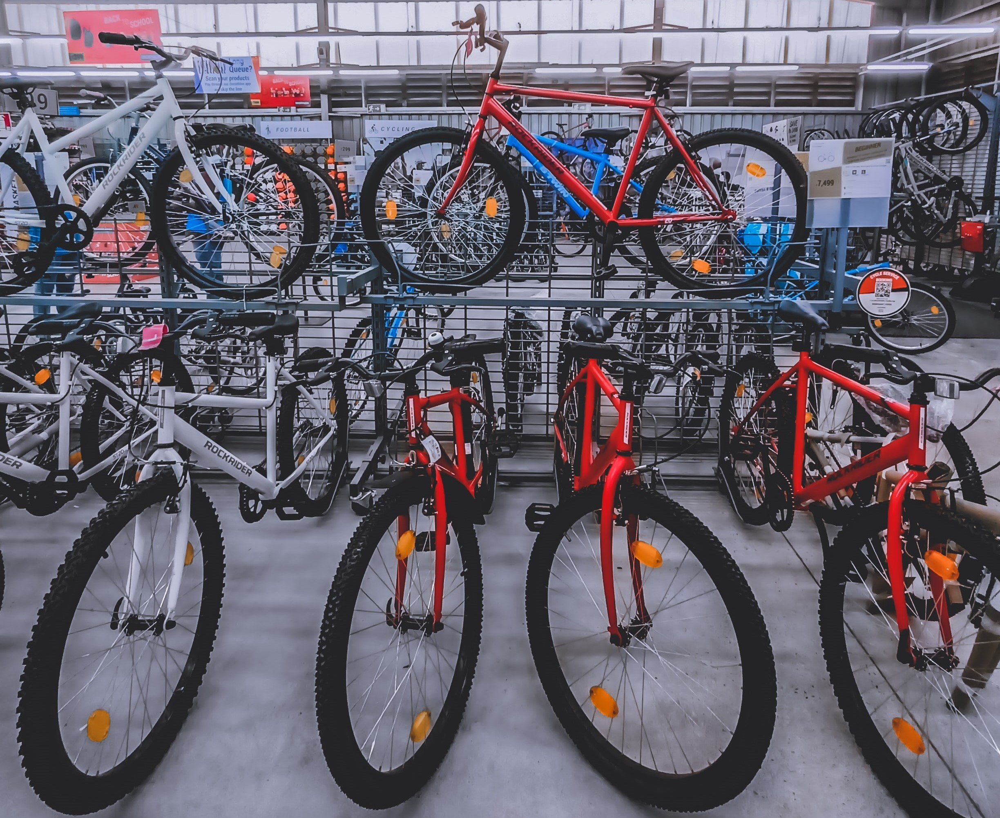

About Me
My love for data began before my career. I've always been an analytical person, but it really manifested itself once I began running competitively.
I would craft my own training plans, based off of years of running data from various sources that I compiled myself.
It became an obsession.
It's no surprise that employers kept pushing me toward roles within the data analytics field.
Just as I was dipping my toes into the wonderful world of data analytics,
I was given the opportunity to take some time away from the workforce and raise a family.
Now that my children are older, I'm eager to get back in the game and continue this exciting chapter!

A casestudy performed for the women-focused smart device company, Bellabeat. Various datasets were analyzed from a competitor to discover trending.
Key insights were delivered to the marketing team to help develop new campaign strategies.
Tools: SQL, EXCEL, TABLEAU
US Median Home
Sales Analysis

An analysis into the median sales price at which homes from select cities across various geographies
in the US were sold from 2008-2023.
Tools: EXCEL, TABLEAU
Bike Stores
Sales Analysis

A custom dataset was generated from SQL for a bike store company and then used to create
an interactive dashboard for the executive team, displaying sales metrics.
Tools: SQL, EXCEL, TABLEAU
Covid Vaccine Tracker
Dashboard

An interactive dashboard tracking the performance of the Covid-19 vaccination program within the global population.
Tools: TABLEAU